Uploading Models to Sketchfab
Sketchfab is a website for sharing and displaying 3D models. Once your model is on Sketchfab, anyone with the link can rotate, zoom, and explore it in a web browser. You can also embed the model in another web page.
In this exercise, you will upload the OBJ and MTL files that you exported from Slicer, fill in the model settings, adjust the 3D settings, and then share the model.
You need a Sketchfab account
Create a free account at sketchfab.com before you start, and make sure you are logged in.
Upload a New Model
You need both the .obj and the .mtl file. The OBJ file holds the surfaces; the MTL file holds the colors of each segment. The two files should have the same name, just different extensions.
- Click the orange Upload button at the top right of any Sketchfab page.
- In the Upload a new model window, drag both the
.objand the.mtlfile into the dashed box, or click browse and select both files.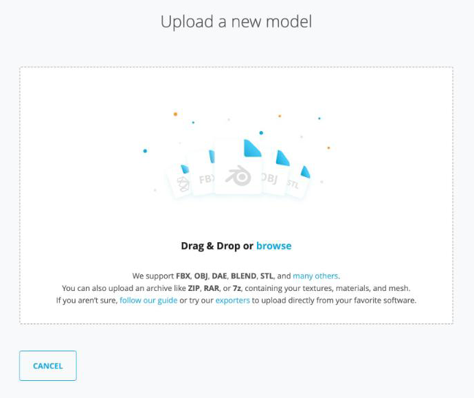
- Check that both files are listed in the box.
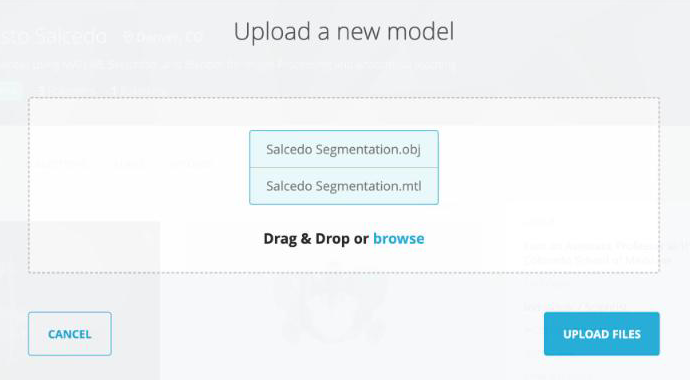
- Click Upload Files.
Large OBJ files
You can also compress the OBJ and MTL files into a single ZIP file and upload that instead. Sketchfab unpacks the ZIP and lists the files inside. ZIP files from the Mac Finder include extra __MACOSX entries; these are harmless, but they also show up in the file list.
Model Settings
As soon as the upload starts, Sketchfab opens the Edit model page. The left panel shows the upload progress (Upload, Processing, Ready to publish). You can fill in the settings while the model processes.
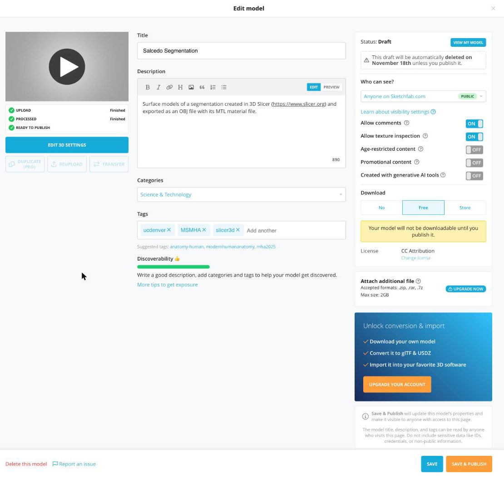
- Title: Sketchfab fills this in from the file name. Change it if needed.
- Description: Add a short description of the model, e.g. which structures were segmented and that the model was made in 3D Slicer.
- Categories: Select Science & Technology from the dropdown.
- Tags: Type a tag and press Return after each one. Be sure to add the ucdenver and MSMHA tags.
- Download: Select Free.
- Click Save at the bottom right.
Select Free download
Be sure to set Download to Free. Other download options may give you a warning that you have run out of credits.
Your model is a draft until you publish it
Save keeps your model as a Draft: only you can see it. The model becomes visible to others only after you click Save & Publish (or Publish). Notice the warning in the right panel: Sketchfab automatically deletes a draft about one month after upload unless you publish it (the panel shows the exact date).
Edit 3D Settings
Once the model has finished processing, click the Edit 3D Settings button (below the model preview on the left) to open the 3D editor.
The editor has a row of tabs across the top of the left panel: General (gear), Lighting (light bulb), Materials, Post Processing Filters (magic wand), Annotations (pin), Animation, and AR/VR.
Save your 3D settings
Changes in the 3D editor are not saved automatically. Click Save Settings at the top right before you leave the editor. Do not click Publish unless you are ready to make your model public.
General
Models exported from Slicer usually do not load in the right orientation. Use the Straighten model controls to rotate the model.
- Under Straighten model, click the arrows next to X, Y, or Z. Each click rotates the model 90° around that axis.
- For this model, one click on the right arrow next to X turns the model so that the lungs are on top and the aorta runs vertically.
- Check Show advanced rotation to show a rotation gizmo in the viewer. Drag the colored rings to fine-tune the orientation.
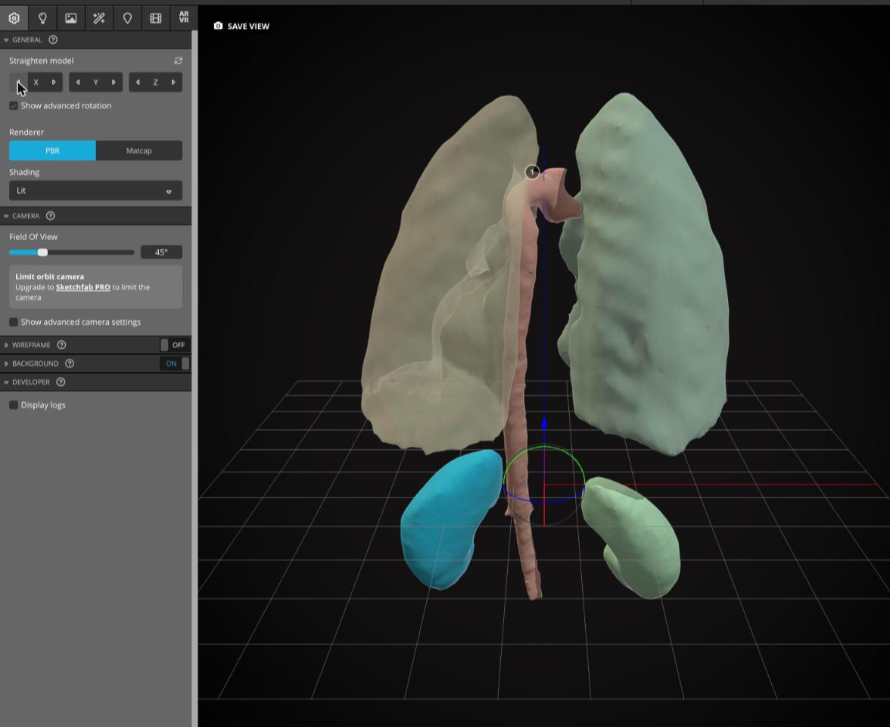
Background
Expand the Background section (still on the General tab). There are three Background type options: Environment, Image, and Color.
Environment
The Environment option places your model in a 3D scene.
- Click Environment.
- To pick a different scene, click the change link next to "Current environment". This takes you to the Lighting tab, where you can pick a scene from the Environment dropdown. Then switch back to the General tab.
- Uncheck Ambient environment to show the scene clearly.
- Set Blur to
0. - Increase the Brightness.
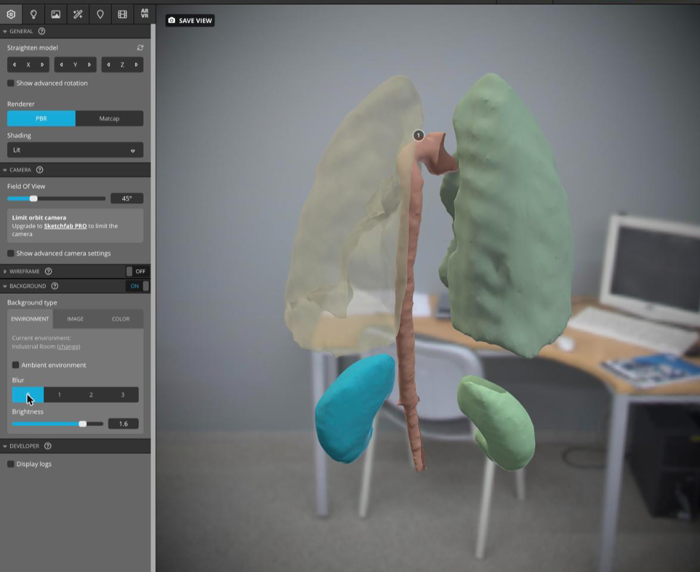
Color
Or you can set the background to a solid color.
- Click Color.
- Click in the color picker, or type a hex value (e.g.
#131111for near black) in the box below it.
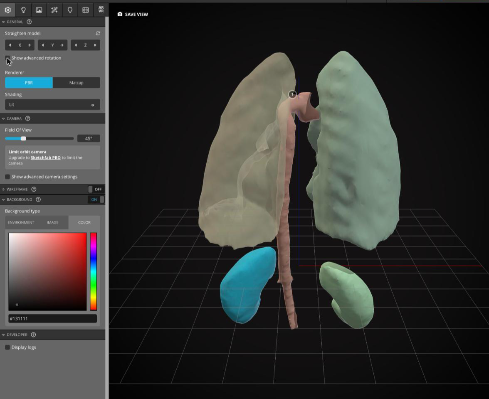
Lighting
- Click the Lighting tab (light bulb icon).
- Turn the Lights toggle ON so you can control the lights.
- Click Load Lighting Preset, then select a preset (e.g. Three-point Lighting).
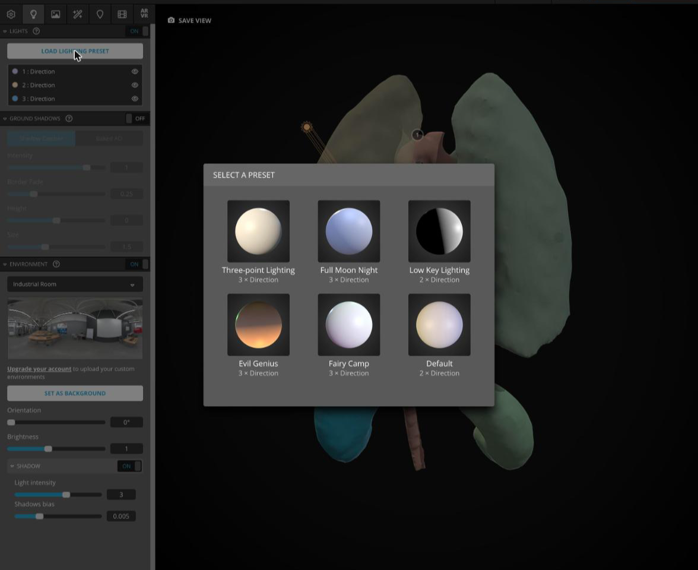
Materials
The Materials tab changes the appearance of each segment (material) in your model.
- Click the Materials tab.
- Select a material from the dropdown at the top of the panel. The selected segment is highlighted in the viewer.
- The material names come from the MTL file that Slicer wrote (e.g.
mtl60716), not from your segment names. Click through the list to find the segment you want.
- The material names come from the MTL file that Slicer wrote (e.g.
- Scroll down to Opacity and make sure it is ON. Expand the section and lower the value (e.g.
0.4) to make the segment see-through.
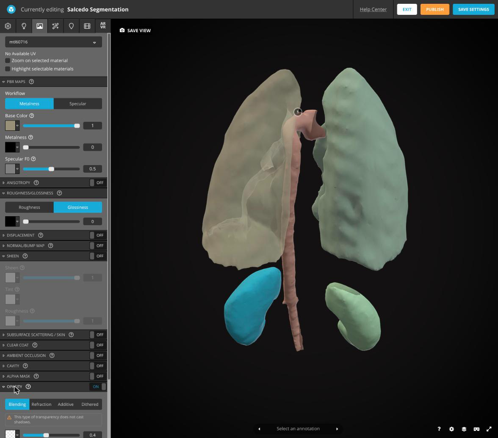
Post Processing Filters
Many settings here change the overall appearance of your model.
- Click the Post Processing Filters tab (magic wand icon).
- Try turning on Sharpness and Vignette.
- Expand a filter (click its name) to adjust its settings.
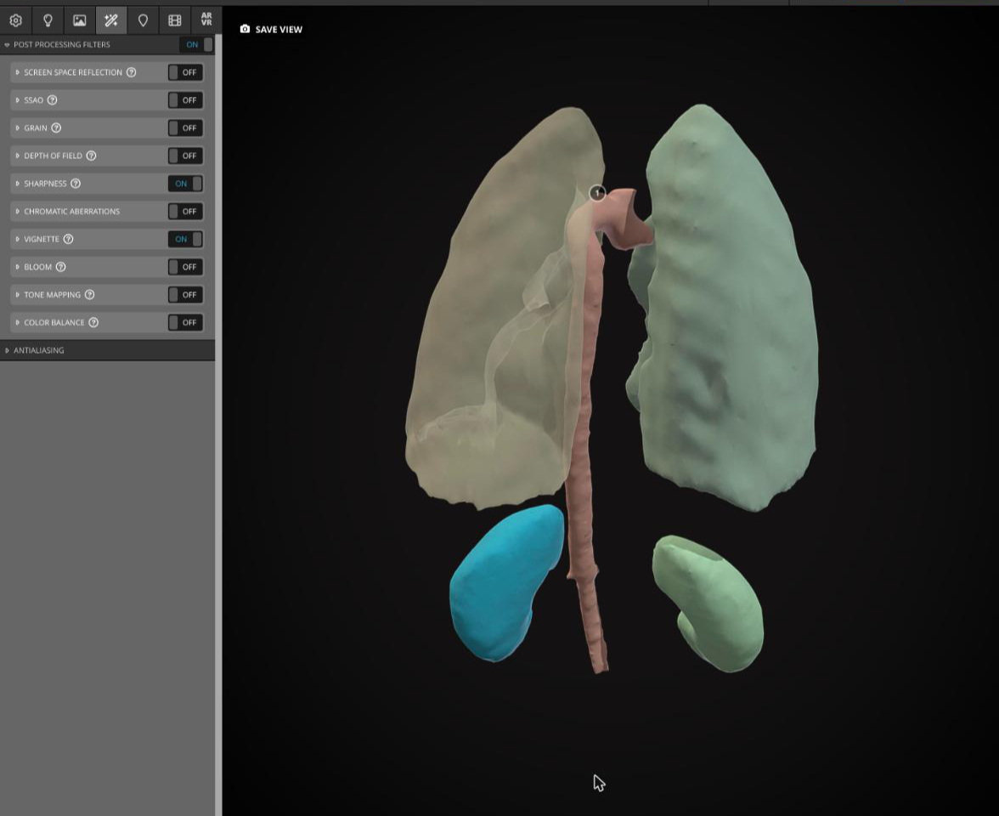
Annotations
Annotations are numbered labels attached to points on your model.
- Click the Annotations tab (pin icon).
- Double-click on a structure in the viewer to place an annotation.
- Type a Title and a Description, then click OK.
- To change an annotation later, click Edit next to it in the left panel. Click the camera icon to save the current view for that annotation.
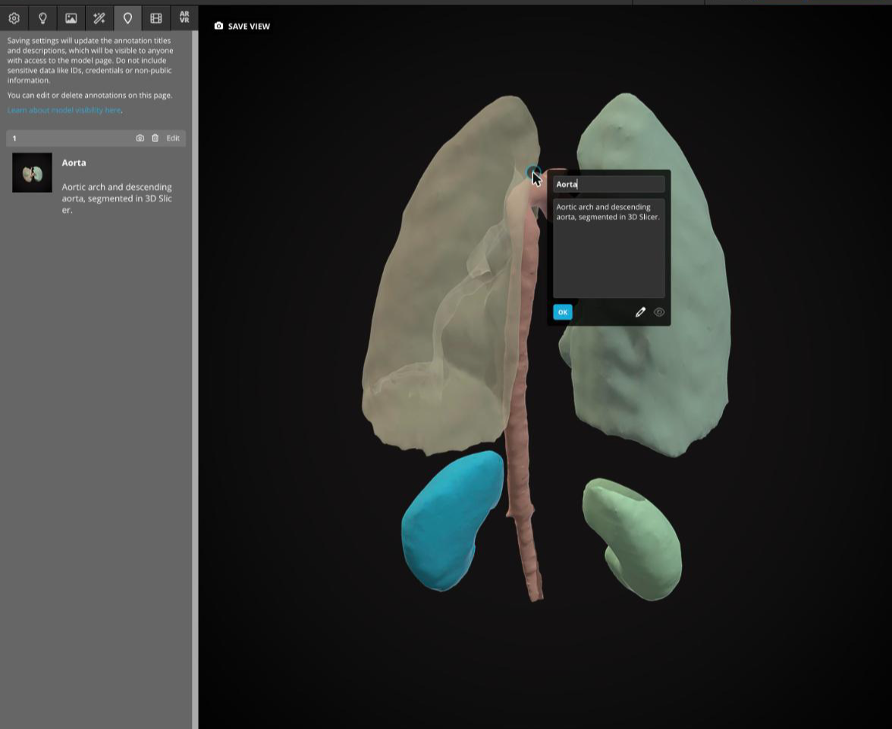
Note
Annotation titles and descriptions are visible to anyone who can see your model page.
Save the View
- Rotate and zoom the model in the viewer until it looks the way you want people to first see it.
- Click Save View (top left of the viewer). This sets the model's thumbnail and initial camera view.
- Click Save Settings, then click Exit.
Model Page
After you exit the editor, you see your model's page. While the model is a draft, the page shows a yellow This model is a Draft box with a Publish button, and the title has a Draft label.
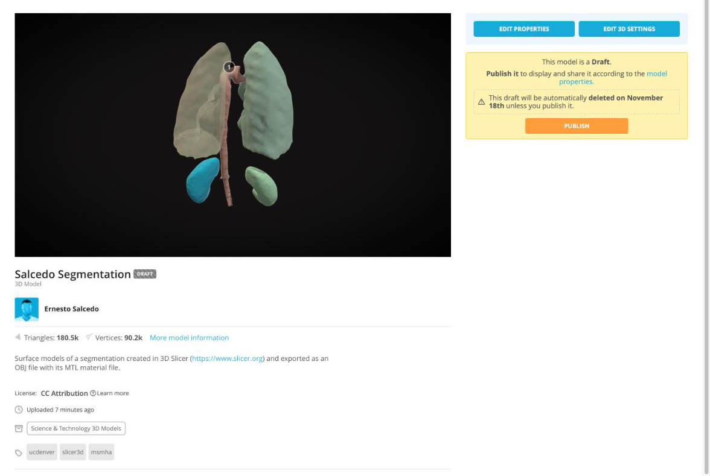
Publish
When you are ready to share your model, click Publish. Sketchfab confirms that the model has been published and shows a short link you can copy right away. Click Got it! See my model to return to the model page.
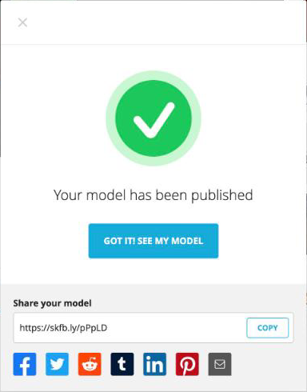
Share and Embed
Once your model is published, the model page shows Download 3D Model, Add To, Embed, and Share links below the model. You can interact with the model by dragging on it.
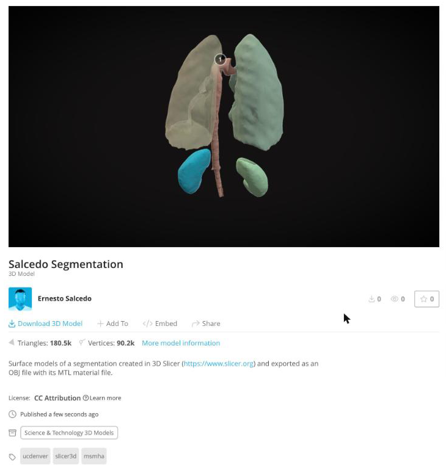
- Click Share to get a short Direct link to your model. Click Copy to copy it.
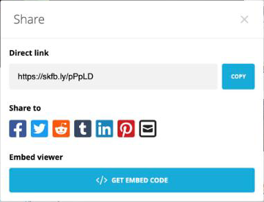
- To place the model in another web page, click Get Embed Code in the Share dialog (or click Embed on the model page). The Embed viewer window shows a preview, options for the embedded viewer, and the embed code. Click Copy to Clipboard to copy the code.
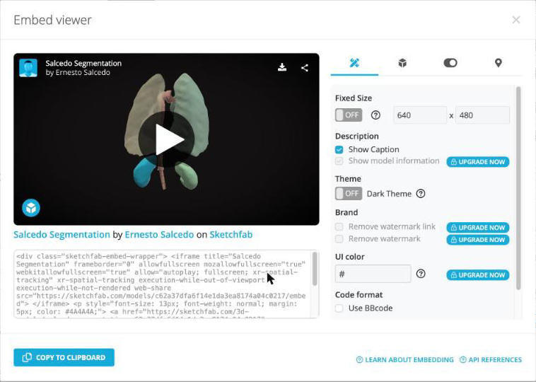
Example: Embedded Model
This is the embed code for the model uploaded in this exercise, pasted into this page. Drag on the model to rotate it, and click the numbered annotation to read it.